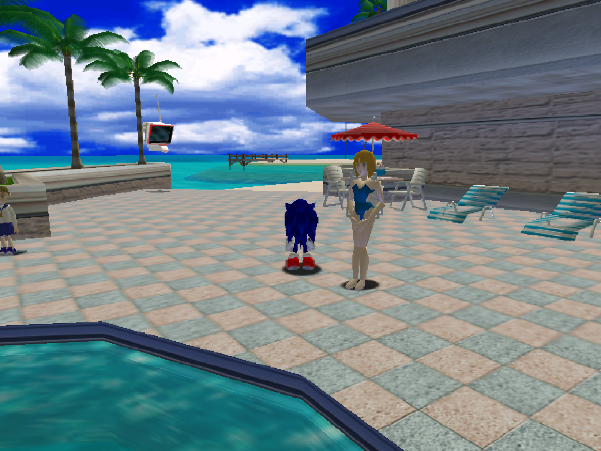
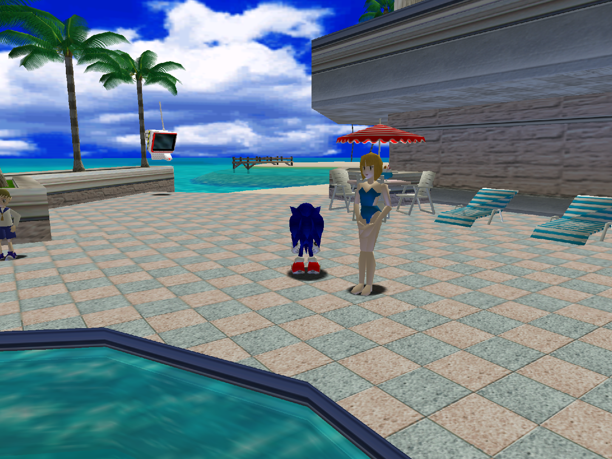
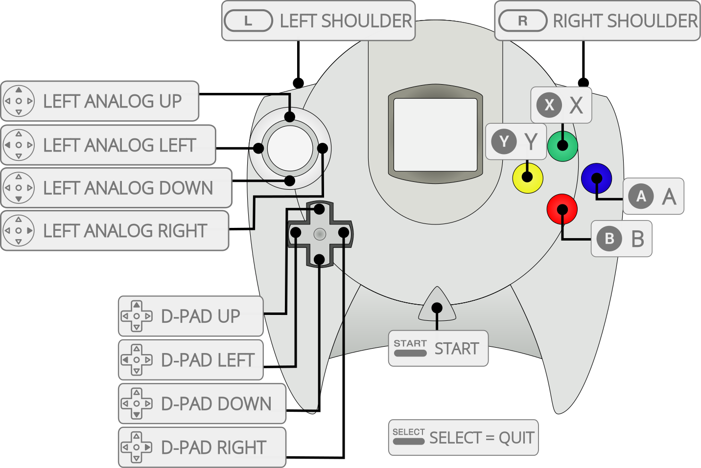

Sega - Dreamcast/NAOMI (Flycast)¶
Background¶
Flycast is a multi-platform Sega Dreamcast, NAOMI, Atomiswave and System SP emulator. The Flycast core has been authored by
- flyinghead
The Flycast core is licensed under
A summary of the licenses behind RetroArch and its cores can be found here.
How to play NAOMI Games¶
-
Run NAOMI games stored in MAME format zip files by following the same process as standard Dreamcast games
-
Run NAOMI GD-ROM format games stored in MAME zip + chd format by running the zip file through RetroArch. The zip file should be stored in your roms folder with the chd file in a subdirectory of the roms folder named after the mame ID.
Example (MAME ID=ikaruga) - [ROM FOLDER]/ikaruga.zip - [ROM FOLDER]/ikaruga/gdl-0010.chd
Extensions¶
Content that can be loaded by the flycast core have the following file extensions:
- .cdi
- .gdi
- .chd
- .cue
- .bin
- .elf
- .zip
- .7z
- .lst
- .dat
- .m3u
Databases¶
RetroArch database(s) that are associated with the flycast core:
BIOS¶
Required or optional firmware files go in RetroArch's system directory.
| Filename | Description | md5sum |
|---|---|---|
| dc/dc_boot.bin | Dreamcast BIOS - Optional | e10c53c2f8b90bab96ead2d368858623 |
| dc/naomi.zip | NAOMI BIOS from MAME - Optional | |
| dc/hod2bios.zip | NAOMI The House of the Dead 2 BIOS from MAME - Optional | |
| dc/f355dlx.zip | NAOMI Ferrari F355 Challenge (deluxe) BIOS from MAME - Optional | |
| dc/f355bios.zip | NAOMI Ferrari F355 Challenge (twin/deluxe) BIOS from MAME - Optional | |
| dc/airlbios.zip | NAOMI Airline Pilots (deluxe) BIOS from MAME - Optional | |
| dc/awbios.zip | Atomiswave BIOS from MAME - Optional | |
| dc/naomi2.zip | NAOMI 2 BIOS from MAME - Optional | |
| dc/segasp.zip | System SP BIOS from MAME - Optional |
Attention
All bios files need to be in a directory named 'dc' in RetroArch's system directory.
Features¶
| Feature | Supported |
|---|---|
| Restart | ✔ |
| Screenshots | ✔ |
| Saves | ✔ |
| States | ✔ |
| Rewind | ✕ |
| Netplay | ✕ |
| Core Options | ✔ |
| Memory Monitoring (achievements) | ✔ |
| RetroArch Cheats | ✔ |
| Native Cheats | ✕ |
| Controls | ✔ |
| Remapping | ✔ |
| Multi-Mouse | ✕ |
| Rumble | ✔ |
| Sensors | ✕ |
| Camera | ✕ |
| Location | ✕ |
| Subsystem | ✕ |
| Softpatching | ✕ |
| Disk Control | ✔ |
| Username | ✕ |
| Crop Overscan (in RetroArch's Video settings) | ✕ |
Directories¶
The FlyCast core's directory name is 'Flycast'
The FlyCast core creates these files in RetroArch's system directory.
dc/
├── vmu_save_A1.bin
├── vmu_save_B1.bin
├── vmu_save_C1.bin
├── vmu_save_D1.bin
└── dc_nvmem.bin
Core provided aspect ratio¶
FlyCast's core provided aspect ratio is 4/3.
Rumble¶
Rumble only works when the Joypad being used has rumble functionality and the Joypad input driver being used has rumble function implementation (e.g. Xinput).
Core options¶
The FlyCast core has the following option(s) that can be tweaked from the core options menu. The default setting is bolded. Settings with (Restart) means that core has to be closed for the new setting to be applied on next launch.
System¶
Configure region, language, BIOS and base hardware settings.
Region [flycast_region] (Default|Japan|USA|Europe)
Language [flycast_language] (Default|Japanese|English|German|French|Spanish|Italian)
Changes the language used by the BIOS and by any games that contain multiple languages.
HLE BIOS [flycast_hle_bios] (disabled|enabled)
Force use of high-level emulation BIOS.
Boot to BIOS [flycast_boot_to_bios] (disabled|enabled)
Boot directly into the Dreamcast BIOS menu.
Enable DSP [flycast_enable_dsp] (enabled|disabled)
Enable emulation of the Dreamcast's audio DSP (digital signal processor). Improves the accuracy of generated sound, but increases performance requirements.
Force Windows CE Mode [flycast_force_windows_ce_modee] (disabled|enabled)
Enable full MMU (Memory Management Unit) emulation and other settings for Windows CE games.
Video¶
Configure visual buffers & effects, display parameters, framerate/-skip and rendering/texture parameters.
Internal resolution (restart) [flycast_internal_resolution] (640x480|1280x960|1920x1440|2560x1920|3200x2400|3840x2880| 4480x3360|5120x3840|5760x4320|6400x4800|7040x5280|7680x5760|8320x6240|8960x6720| 9600x7200|10240x7680|10880x8160|11520x8640|12160x9120|12800x9600)
Modify rendering resolution.
Internal resolution - 640x480

Internal resolution - 1920x1440

Cable Type [flycast_cable_type] (TV (Composite)2|TV (RGB)|VGA(RGB))
The output signal type. 'TV (Composite)' is the most widely supported.
Broadcast Standard [flycast_brodcast] (Default|PAL-M (Brazil)|PAL-N (Argentina, Paraguay, Uruguay)|NTSC|PAL (World))
Screen Orientation [flycast_screen_orientation] (Horizontal|Vertical)
Alpha Sorting [flycast_alpha_sorting] (Per-Strip (fast, least accurate)|Per-Triangle (normal)|"Per-Pixel (accurate, but slowest)1)
Enable RTT (Render To Texture) Buffer (Off|On)
Mipmapping (Off|On)
Volume modifier (On|off)
A GPU feature that is typically used by games to draw shadows of objects. You should typically leave this on - performance impact should be minimal to negligible.
Anisotropic Filtering [flycast_anistropic_filtering] (4|2|8|16)
Enhance the quality of textures on surfaces that are at oblique viewing angles with respect to the camera.
Delay Frame Swapping [flycast_delay_frame_swapping] (disabled|enabled)
Useful to avoid flashing screens or glitchy videos. Not recommended on slow platforms. Note: This setting only applies when 'Threaded Rendering' is enabled.
PowerVR2 Post-processing Filter [flycast_pvr2_filtering] (disabled|enabled)
Post-process the rendered image to simulate effects specific to the PowerVR2 GPU and analog video signals.
Performance¶
Configure threaded rendering, integer division optimisations and frame skip settings
Threaded Rendering (Restart Required) [flycast_threaded_rendering] (enabled|disabled)
Runs the GPU and CPU on different threads. Highly recommended.
Auto Skip Frame [flycast_skip_frame] (disabled|enabled)
Automatically skip frames when the emulator is running slow. Note: This setting only applies when 'Threaded Rendering' is enabled.
Frame Skipping [flycast_frame_skipping] (disabled|1|2|3|4|5|6)
Sets the number of frames to skip between each displayed frame.
Widescreen Cheats (Restart Required) [flycast_widescreen_cheats] (Off|On)
Activates cheats that allow certain games to display in widescreen format.
Widescreen Hack [flycast_widescreen_hack] (Off|On)
Draw geometry outside of the normal 4:3 aspect ratio. May produce graphical glitches in the revealed areas.
GD-ROM Fast Loading (inaccurate) [flycast_gdrom_fast_loading] (On|Off)
Speeds up GD-ROM loading.
Load Custom Textures [flycast_custom_textures] (Off|On)
Dump Textures [flycast_dump_textures] (Off|On)
Input¶
Configure gamepad and light gun settings.
Analog Stick Deadzone [flycast_analog_stick_deadzone] (15%|0%|5%|10%|20%|25%|30%)
Trigger Deadzone [flycast_trigger_deadzone] (0%|5%|10%|15%|20%|25%|30%)
Digital Triggers [flycast_digital_triggers] (Off|On)
Purupuru Pack/Vibration Pack [flycast_enable_purupuru] (On|Off)
Enables controller force feedback.
Gun crosshair 1 Display [flycast_lightgun1_crosshair] (Off|White|Red|Green|Blue)
Gun crosshair 2 Display [flycast_lightgun2_crosshair] (Off|White|Red|Green|Blue)
Gun crosshair 3 Display [flycast_lightgun3_crosshair] (Off|White|Red|Green|Blue)
Gun crosshair 4 Display [flycast_lightgun4_crosshair] (Off|White|Red|Green|Blue)
Visual Memory Unit¶
Configure per-game VMU save files and on-scren VMU visibility sttings.
Per-Game VMUs [flycast_per_content_vmus] (disabled|VMU A1|All VMUs)
When disabled, all games share 4 VMU save files (A1, B1, C1, D1) located in RetroArch's system directory. The 'VMU A1' setting creates a unique VMU 'A1' file in RetroArch's save directory for each game that is launched. The 'All VMUs' setting creates 4 unique VMU files (A1, B1, C1, D1) for each game that is launched.
VMU Screen 1 Display [flycast_vmu1_screen_display] (Off|enabled)
VMU Screen 1 Position [flycast_vmu1_screen_position] (Upper Left|Upper Right|Lower Left|Lower Right)
VMU Screen 1 Size [flycast_vmu1_screen_size] (1x|2x|3x|4x|5x)
VMU Screen 1 Pixel On Color [flycast_vmu1_pixel_on_color] (Default ON|Default OFF|Black|Blue|Light Blue|Green|Cyan|Cyan Blue|Light Green|Cyan Green|Light Cyan|Red|Purple|Light Purple|Yellow|Gray|Light Purple (2)|Light Green (2)|Light Green (3)|Light Cyan (2)|Light Red(2)|Magenta|Light Purple (3)|Light Oragen|Orange|Light Purple(4)|Light Yellow|Light Yellow (2)|White)
VMU Screen 1 Pixel Off Color [flycast_vmu1_pixel_off_color] (Default OFF|Default ON|Black|Blue|Light Blue|Green|Cyan|Cyan Blue|Light Green|Cyan Green|Light Cyan|Red|Purple|Light Purple|Yellow|Gray|Light Purple (2)|Light Green (2)|Light Green (3)|Light Cyan (2)|Light Red(2)|Magenta|Light Purple (3)|Light Oragen|Orange|Light Purple(4)|Light Yellow|Light Yellow (2)|White)
VMU Screen 1 Opacity [flycast_vmu1_screen_opacity] (100%|10%|20%|30%|40%|50%|60%|70%|80%|90%)
VMU Screen 2 Display [flycast_vmu2_screen_display] (Off|enabled)
VMU Screen 2 Position [flycast_vmu2_screen_position] (Upper Left|Upper Right|Lower Left|Lower Right)
VMU Screen 2 Size [flycast_vmu2_screen_size] (1x|2x|3x|4x|5x)
VMU Screen 2 Pixel On Color [flycast_vmu2_pixel_on_color] (Default ON|Default OFF|Black|Blue|Light Blue|Green|Cyan|Cyan Blue|Light Green|Cyan Green|Light Cyan|Red|Purple|Light Purple|Yellow|Gray|Light Purple (2)|Light Green (2)|Light Green (3)|Light Cyan (2)|Light Red(2)|Magenta|Light Purple (3)|Light Oragen|Orange|Light Purple(4)|Light Yellow|Light Yellow (2)|White)
VMU Screen 2 Pixel Off Color [flycast_vmu2_pixel_off_color] (Default OFF|Default ON|Black|Blue|Light Blue|Green|Cyan|Cyan Blue|Light Green|Cyan Green|Light Cyan|Red|Purple|Light Purple|Yellow|Gray|Light Purple (2)|Light Green (2)|Light Green (3)|Light Cyan (2)|Light Red(2)|Magenta|Light Purple (3)|Light Oragen|Orange|Light Purple(4)|Light Yellow|Light Yellow (2)|White)
VMU Screen 2 Opacity [flycast_vmu2_screen_opacity] (100%|10%|20%|30%|40%|50%|60%|70%|80%|90%)
VMU Screen 3 Display [flycast_vmu3_screen_display] (Off|enabled)
VMU Screen 3 Position [flycast_vmu3_screen_position] (Upper Left|Upper Right|Lower Left|Lower Right)
VMU Screen 3 Size [flycast_vmu3_screen_size] (1x|2x|3x|4x|5x)
VMU Screen 3 Pixel On Color [flycast_vmu3_pixel_on_color] (Default ON|Default OFF|Black|Blue|Light Blue|Green|Cyan|Cyan Blue|Light Green|Cyan Green|Light Cyan|Red|Purple|Light Purple|Yellow|Gray|Light Purple (2)|Light Green (2)|Light Green (3)|Light Cyan (2)|Light Red(2)|Magenta|Light Purple (3)|Light Oragen|Orange|Light Purple(4)|Light Yellow|Light Yellow (2)|White)
VMU Screen 3 Pixel Off Color [flycast_vmu3_pixel_off_color] (Default OFF|Default ON|Black|Blue|Light Blue|Green|Cyan|Cyan Blue|Light Green|Cyan Green|Light Cyan|Red|Purple|Light Purple|Yellow|Gray|Light Purple (2)|Light Green (2)|Light Green (3)|Light Cyan (2)|Light Red(2)|Magenta|Light Purple (3)|Light Oragen|Orange|Light Purple(4)|Light Yellow|Light Yellow (2)|White)
VMU Screen 3 Opacity [flycast_vmu3_screen_opacity] (100%|10%|20%|30%|40%|50%|60%|70%|80%|90%)
VMU Screen 4 Display [flycast_vmu4_screen_display] (Off|enabled)
VMU Screen 4 Position [flycast_vmu4_screen_position] (Upper Left|Upper Right|Lower Left|Lower Right)
VMU Screen 4 Size [flycast_vmu4_screen_size] (1x|2x|3x|4x|5x)
VMU Screen 4 Pixel On Color [flycast_vmu4_pixel_on_color] (Default ON|Default OFF|Black|Blue|Light Blue|Green|Cyan|Cyan Blue|Light Green|Cyan Green|Light Cyan|Red|Purple|Light Purple|Yellow|Gray|Light Purple (2)|Light Green (2)|Light Green (3)|Light Cyan (2)|Light Red(2)|Magenta|Light Purple (3)|Light Oragen|Orange|Light Purple(4)|Light Yellow|Light Yellow (2)|White)
VMU Screen 4 Pixel Off Color [flycast_vmu4_pixel_off_color] (Default OFF|Default ON|Black|Blue|Light Blue|Green|Cyan|Cyan Blue|Light Green|Cyan Green|Light Cyan|Red|Purple|Light Purple|Yellow|Gray|Light Purple (2)|Light Green (2)|Light Green (3)|Light Cyan (2)|Light Red(2)|Magenta|Light Purple (3)|Light Oragen|Orange|Light Purple(4)|Light Yellow|Light Yellow (2)|White)
VMU Screen 4 Opacity [flycast_vmu4_screen_opacity] (100%|10%|20%|30%|40%|50%|60%|70%|80%|90%)
Controllers¶
Device types¶
The Flycast core supports the following device type(s) in the controls menu, bolded device types are the default for the specified user(s):
User 1 - 4 device types¶
- None - Input disabled.
- RetroPad - Joypad
- RetroPad w/Analog - Joypad - There is no reason to switch to this.
Controller tables¶
Joypad and analog device type table¶

| User 1 - 4 input descriptors | RetroPad | |
|---|---|---|
| A |  |
A |
| X |  |
X |
| Start |  |
Start |
| D-Pad Up |  |
D-Pad Up |
| D-Pad Down |  |
D-Pad Down |
| D-Pad Left |  |
D-Pad Left |
| D-Pad Right |  |
D-Pad Right |
| B |  |
B |
| Y |  |
Y |
| L (fierce) |  |
L (fierce) |
| R (fierce) |  |
R (fierce) |
| L (weak) |  |
L (weak) |
| R (weak) |  |
R (weak) |
| Analog X |  X X |
Analog X |
| Analog Y | Y |
Analog Y |
Multiple-disc games¶
If foo is a multiple-disc game, you should have .chd/cue/cdi/gdi files for each one, e.g. foo (Disc 1).chd, foo (Disc 2).chd, foo (Disc 3).chd.
To take advantage of Flycast's Disk Control feature for disk swapping, an index file (a m3u file) should be made.
Create a text file and save it as foo.m3u. Then enter your game's .chd/cue/cdi/gdi files on it. The m3u file contents should look something like this:
foo.m3u
After that, you can load the foo.m3u file in RetroArch with the Flycast core.
An alternative is to append discs to the current playlist via the "Disk Image Append" option in the Disk Control RetroArch menu.
Compatibility¶
General Flycast Issues¶
- If the date and time are not being saved properly, please ensure you have the correct dc_flash.bin and dc_bios.bin files (check the md5sum values). Also try deleting all of the dc_nvmem.bin files in the system/dc directory.
- Once you save to a VMU slot with any game, that VMU becomes inaccessible the next time you load the emulator. The fix for this is to enable the Core Option for "Boot to BIOS", exit RA, delete all of the vmu_save*.bin files, start RA/Flycast. It will boot to BIOS where you can select the VMU option, select one of the VMUs, click the "All" icon in upper-left, click Delete All and the VMU will be formatted/intialized. Disable the "Boot to BIOS" option, restart RA, and everything should be fine.
- Polygon sorting issues can make objects appear distorted. Use Per-Pixel Alpha sorting for accurate rendering (at the expense of performance).
- When using an Xbox 360 Controller, analog triggers don't work properly. Use the bumpers instead.
- Changing games without closing and reloading RetroArch often leads to RetroArch crashing.
| Game | Issue |
|---|---|
| Crazy Taxi (PAL) | Player taxis do not emit engine sounds. |
| Crazy Taxi (USA) | Player taxis do not emit engine sounds. |
| Jet Grind Radio (USA) | Police reports during levels do not display correctly. |
| Sonic Adventure (PAL) | Must be set to use "VGA" output in core options, as "TV" mode will cause all subsequent FMV to make RetroArch become unresponsive. |
| Unreal Tournament (USA) | Set Cable Type to 'VGA (RGB)', otherwise the game will crash at start. |